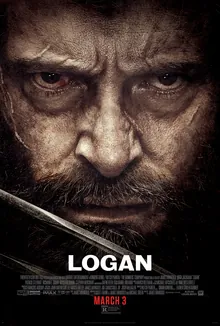

The genetics
Genetics drives the plot. Alkali-Transigen grows mutant children from stored mutant DNA, as weapons, and when they prove hard to control it plans to dispose of them; X-24 is a clone of Logan grown as the perfect soldier. The company's head, Dr. Zander Rice, has a personal grudge against Logan, who killed his father, and he reveals that the end of mutant births is no accident: the company has suppressed the mutant gene through genetically engineered crops distributed in the food supply. Scientists here are servants of a corporate-military project who treat children as products, while the nurses who help them escape provide the film's moral counterweight. Laura is Logan's genetic daughter, and the film explores whether biology makes them a family; his last words urge her not to become the weapon she was made to be. Using crops to silence a gene across a population is pure fiction, but the film's themes echo real fears about the commercial and military control of genetic technologies.
How genetics is portrayed
- Overall portrayal of genetics
- negative Genetics is the tool of a corporate weapons project that treats children as products and secretly controls a whole population; the moral counterweight comes from the nurses who free the children, not from any scientist.
- Outcome of the genetic intervention
- negative Transigen's work yields abused child soldiers marked for execution, a clone that murders Xavier and the Munson family and kills Logan, and the near extinction of mutants through the food supply.
- Alkali-Transigen (Dr. Zander Rice)
- villain Aim: military, power, revenge (negative). The biotech company, led by Rice, grows mutant children from stored DNA as weapons, plans to kill them when they prove hard to control, breeds the mindless clone X-24, and has suppressed mutant births through engineered crops; Rice, who also wants revenge on Logan for his father, is the 'villainous mad scientist' Logan shoots dead.
The story
In 2029, no mutants have been born for 25 years. An aging Logan, slowly poisoned by his adamantium skeleton, works as a limousine driver near El Paso and, with the mutant Caliban, cares for Charles Xavier, whose dementia causes dangerous telepathic seizures. A former nurse, Gabriela, asks Logan to take a girl, Laura, to Eden, a supposed refuge near the Canadian border. Laura turns out to have powers like his own: she was created by the company Alkali-Transigen from his DNA, one of several children bred as weapons, whom the company planned to kill when it could not control them. Pursued by the company's Reavers and by its head, Dr. Zander Rice, Logan, Laura and Charles flee north. Rice unleashes X-24, a feral clone of Logan, who kills Charles. Logan finally reaches the escaped children and, mortally wounded, helps them cross the border. Laura shoots X-24 with an adamantium bullet, and Logan dies in her arms.